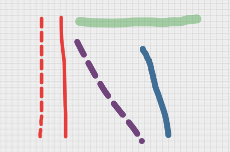

Tray-first overlay
QuickPen lives in the tray and overlays your entire screen on demand without owning a window.
Draw on your screen. Capture. Move on.
QuickPen sits in the tray and snaps an overlay on top of your screen. Press Ctrl Ctrl to open a radial menu, draw, highlight, blur, capture and keep working without breaking focus.

QuickPen lives in the tray and overlays your entire screen on demand without owning a window.
Double-tap Ctrl to open a radial menu with every tool one flick away — pen, shapes, text, blur, capture.
Screenshot, video and GIF capture with selection presets, freeze frame and auto-capture timers.
Pen, Arrow Pen, Highlighter and Highlighter MultiPoint with alpha-aware previews.
Rectangle, ellipse, arrow, line — filled or outlined, with curved editing for linear shapes.
Inline Text and resizable Label Text with multi-line editing and 8-handle resize.
Auto-numbered counters with curved connectors and sticky Post-it notes on the overlay.
Blur, Spotlight, Mask, Zoom and Screen Freeze keep attention where it matters.
Screenshot, Video and GIF with selection slots, free selection, freeze and auto-capture.
Screenshots of QuickPen tools, the radial menu and settings screens.
Start free with every drawing tool. Unlock Pro features when you need them.
For everyday on-screen annotation.
All capture and advanced focus tools.
Pro unlocks capture and focus tooling — see the manual for the full Free vs Pro breakdown.
Press Ctrl twice — on the second press, hold for a brief moment. The radial menu opens at the cursor with every tool reachable in one flick.
No. Capture only happens when you explicitly start a screenshot, video or GIF session. QuickPen does not collect data in the background.
Yes. The overlay, side launcher and capture selection are monitor-aware, with per-monitor position memory and DPI-aware sizing.
QuickPen checks the release manifest from quick-pen-releases and offers to download and install the latest version.
User preferences are stored locally per Windows user. Nothing is uploaded.